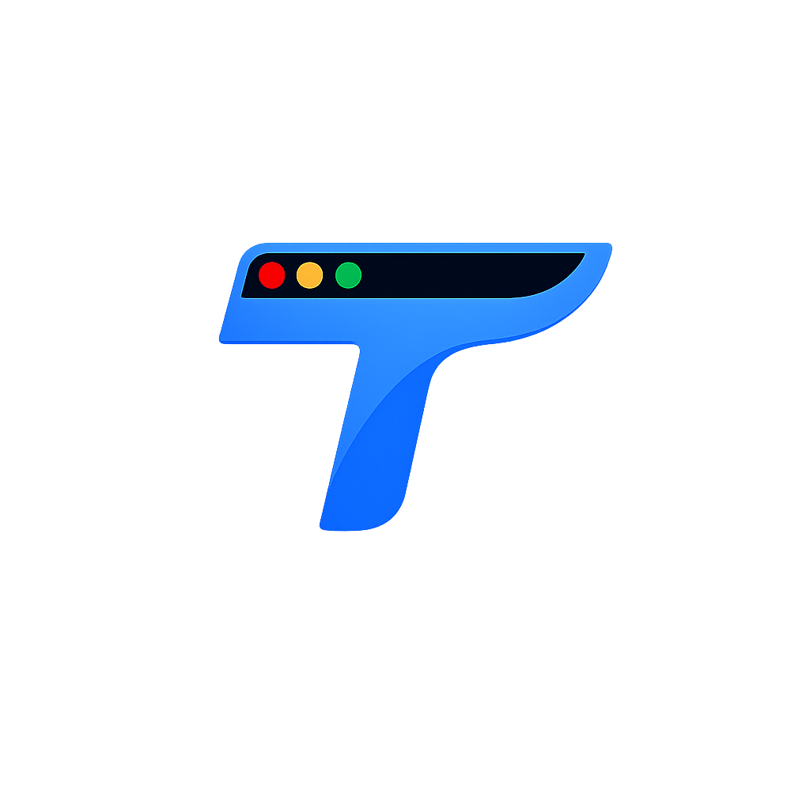

Last updated: March 2, 2026
Welcome to tab.flow ("we," "our," or "us"). We respect your privacy and are committed to protecting any personal data you share with us. This Privacy Policy explains how we collect, use, disclose, and safeguard your information when you use the tab.flow browser extension and its optional cloud services (collectively, the "Service").
By installing or using tab.flow, you agree to the terms described in this policy. If you do not agree, please uninstall the extension and discontinue use.
tab.flow reads your open tab titles, URLs, favicons, tab group names, and tab group colors solely to display and manage them in the HUD overlay. This data is processed entirely within your browser and is never transmitted to any external server.
tab.flow reads Chrome's sessions API to display recently closed tabs. This metadata stays local to your browser and is never stored remotely.
If you choose to create an account, we collect your email address through AWS Cognito. If you sign in with Google, we also receive your name and profile picture from Google. Account creation is entirely optional — tab.flow works fully without an account.
When signed in, you may choose to sync the following to our cloud database:
When you use the AI tab assistant, your query text and your current open tab titles are sent to Groq's API to generate a response. No other browsing data is shared. Queries are not stored on our servers.
We may collect general, non-identifying usage information such as device type, browser type, and feature usage patterns to help improve the Service. We do not collect your browsing history, search queries, or page content.
The following data is processed and stored exclusively within your browser and is never transmitted externally under any circumstance:
This data is stored using Chrome's built-in chrome.storage.local API and in-memory extension state. It is accessible only to the tab.flow extension and is cleared when you uninstall.
Local data is stored securely within Chrome's extension sandbox, which isolates it from other extensions and web pages.
Cloud data (for signed-in users) is stored in a Neon PostgreSQL database with encryption at rest and encryption in transit (TLS). Authentication tokens are managed by AWS Cognito, which provides industry-standard security including hashed passwords and token rotation.
We implement appropriate technical and organizational measures to protect your personal data against unauthorized access, alteration, disclosure, or destruction. However, no method of electronic storage or transmission is 100% secure, and we cannot guarantee absolute security.
We do not sell, trade, rent, or otherwise share your personal information with third parties for marketing purposes. We may share information only in the following limited circumstances:
The Service integrates with the following third-party services. Each is only active when you use the corresponding feature:
We do not use any analytics, tracking, or advertising SDKs in tab.flow.
tab.flow's use and transfer to any other app of information received from Google APIs will adhere to the Google API Services User Data Policy, including the Limited Use requirements.
Specifically:
tab.flow requests the following browser permissions, each for a specific purpose:
tab.flow does not use any undisclosed permissions. Every permission listed in the extension manifest is described above and serves a specific, user-facing function.
You have the right to:
To exercise any of these rights, please contact us using the information in Section 14 below. We will respond within 30 days of receiving your request.
Local data is retained on your device until you uninstall the extension or clear Chrome's extension storage.
Cloud data is retained for as long as your account is active or as needed to provide the Service. If you delete your account, we will permanently delete your personal data within 30 days, except where we are required by law to retain it for a longer period.
The Service is not intended for children under the age of 13. We do not knowingly collect personal information from children under 13. If we become aware that we have collected data from a child under 13, we will take steps to delete it promptly. If you believe a child has provided us with personal data, please contact us immediately.
We may update this Privacy Policy from time to time. We will notify you of any material changes by posting the new Privacy Policy on this page and updating the "Last updated" date at the top. Your continued use of the Service after changes are posted constitutes your acceptance of the updated policy.
We encourage you to review this page periodically to stay informed about how we protect your data.
If you have any questions about this Privacy Policy, our data practices, or wish to exercise your data rights, please contact us at:
Email: daniel.zhao2007@gmail.com